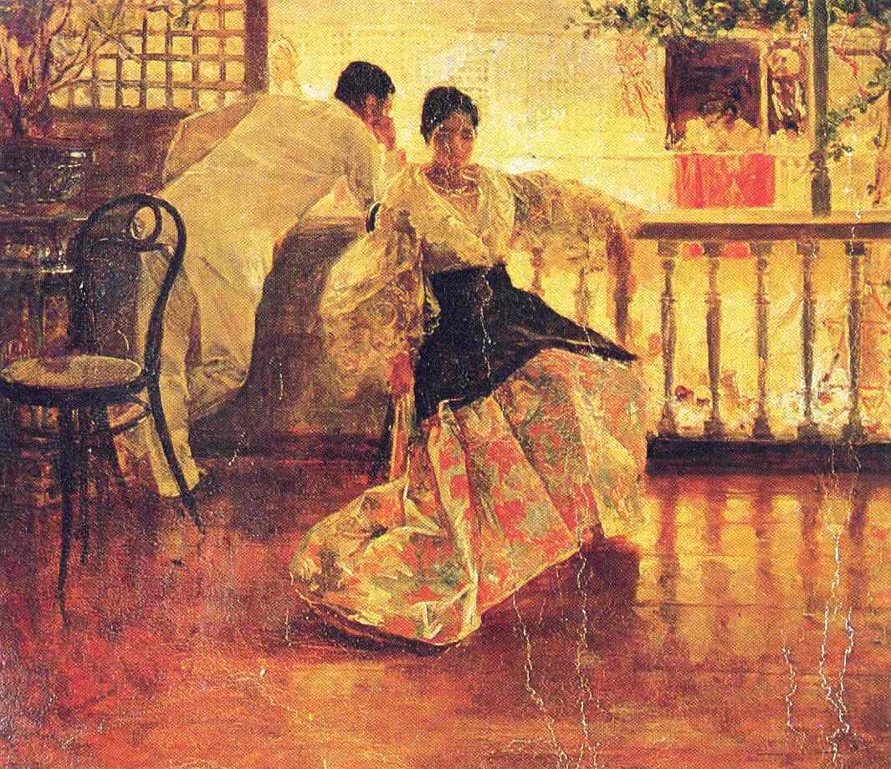
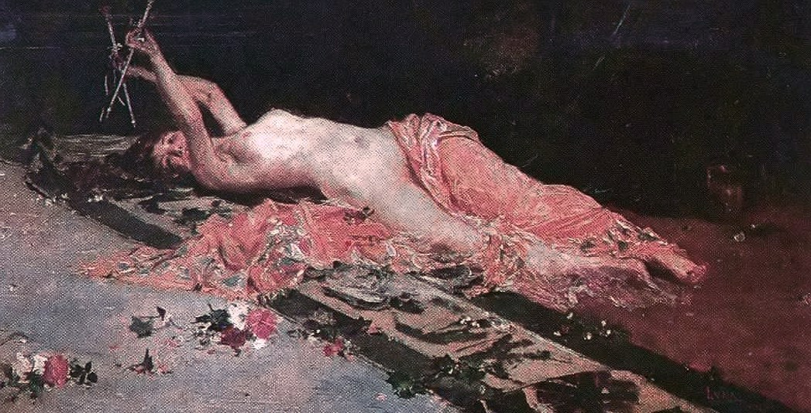

España y Filipinas
España y Filipinas (“Spain and the Philippines") is a series of oil on wood paintings by Filipino painter, Ilustrado, and revolutionary activist, Juan Luna. It is an allegorical depiction of two women together, one a representation of Spain and the other of the Philippines. The painting, also known as España Guiando a Filipinas ("Spain Leading the Philippines"), is regarded as one of the “enduring pieces of legacy” that the Filipinos inherited from Luna.
Location: López Museum and Library, National Gallery Singapore, and Museo del Prado (on loan to the City Council of Cádiz)
Location: López Museum and Library, National Gallery Singapore, and Museo del Prado (on loan to the City Council of Cádiz)

Las Damas Romanas
Las Damas Romanas (literally, "The Roman Dames"), also known as The Roman Maidens, The Roman Women, or The Roman Ladies, is an oil on canvas painted by Juan Luna in the style of the Neo-Classicism, one of the most famous Filipino painters of the Spanish period in the Philippines. It was painted by Luna when he was a student of the school of painting in the Real Academia de Bellas Artes de San Fernando (Royal Academy of Fine Arts of San Fernando) in Madrid, Spain in 1877. Alejo Valera, a Spanish painting teacher, took Luna as an apprentice and brought him to Rome where Luna created Las Damas Romanas in 1882. Skilled in the style of the Academy he was the first Filipino painter to win international recognition in Europe and the US.
Location: Private Collection
Location: Private Collection

Tampuhan
Tampuhan, meaning "sulking", is an 1895 classic oil on canvas impressionist painting by Filipino painter and revolutionary activist Juan Luna. It depicts a Filipino man and a Filipino woman having a lovers' quarrel.
Location: Rosalinda Orosa collection
Location: Rosalinda Orosa collection

Odalisque
The Odalisque is a famous 1885 painting by award-winning Filipino painter and revolutionary activist Juan Luna. It is one of Luna's so-called "Academic Salon portraits" that followed the standards of proper proportion and perspective, and realistic depictions with "an air of dignity and allure". Although less polished compared to Luna's other works of art, the Odalisque is typical of the well-planned characteristic of the artist's portraits, meaning it was painted in a personal studio while expertly studying the desired effects, and with finesse. The Odalisque is one of the paintings that made Luna as an officially accepted artist at the Salon of Paris because it shows Luna's skill at draftsmanship, his "talent to draw and to draw well". The Odalisque was formerly a part of the painting collection of Philippine national hero José Rizal. It is currently a component of the Don Luis Araneta Collection in the Philippines.
Location: Don Luis Araneta Collection (Philippines)
Location: Don Luis Araneta Collection (Philippines)